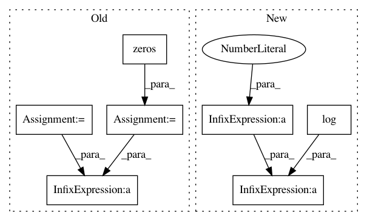

e7a02b6293100e21ef15870fd0f9069beaae5290,train.py,,,#,21
Before Change
batch_size = data.size(0)
running_batch_sizes += batch_size
real_label = Variable(torch.ones(batch_size))
fake_label = Variable(torch.zeros(batch_size))
////////////////////////////////////////////////////////
// (1) Update D network: maximize log(D(x)) + log(1 - D(G(z)))
//////////////////////////////////////////////////////
real_img = Variable(target)
if torch.cuda.is_available():
real_img = real_img.cuda()
real_label = real_label.cuda()
// compute loss of real_img
real_out = netD(real_img)
d_loss_real = discriminator_criterion(real_out, real_label)
real_scores = real_out.data.sum()
running_real_scores += real_scores
// compute loss of fake_img
z = Variable(data)
if torch.cuda.is_available():
z = z.cuda()
fake_label = fake_label.cuda()
fake_img = netG(z)
fake_out = netD(fake_img)
d_loss_fake = discriminator_criterion(fake_out, fake_label)
fake_scores = fake_out.data.sum()
d_loss = d_loss_real + d_loss_fake
// bp and optimize
optimizerD.zero_grad()
d_loss.backward(retain_graph=True)
optimizerD.step()
////////////////////////////////////////////////////////
// (2) Update G network: maximize log(D(G(z)))
//////////////////////////////////////////////////////
index = 1
while ((fabs((real_scores - fake_scores) / batch_size) > G_THRESHOLD) or g_update_first) and (
index <= G_STOP_THRESHOLD):
// compute loss of fake_img
g_loss = generator_criterion(fake_out, real_label, fake_img, real_img)
// bp and optimize
optimizerG.zero_grad()
g_loss.backward()
optimizerG.step()
fake_img = netG(z)
fake_out = netD(fake_img)
fake_scores = fake_out.data.sum()
g_update_first = False
index += 1
g_loss = generator_criterion(fake_out, real_label, fake_img, real_img)
running_g_loss += g_loss.data[0] * batch_size
d_loss_fake = discriminator_criterion(fake_out, fake_label)
d_loss = d_loss_real + d_loss_fake
running_d_loss += d_loss.data[0] * batch_size
running_fake_scores += fake_scores
train_bar.set_description(desc="[%d/%d] Loss_D: %.4f Loss_G: %.4f D(x): %.4f D(G(z)): %.4f"
After Change
g_loss = generator_criterion(fake_out, fake_img, real_img)
running_g_loss += g_loss.data[0] * batch_size
d_loss = - torch.mean(torch.log(real_out) + torch.log(1 - fake_out))
running_d_loss += d_loss.data[0] * batch_size
running_fake_scores += fake_scores
In pattern: SUPERPATTERN
Frequency: 3
Non-data size: 7
Instances
Project Name: leftthomas/SRGAN
Commit Name: e7a02b6293100e21ef15870fd0f9069beaae5290
Time: 2017-12-02
Author: leftthomas@qq.com
File Name: train.py
Class Name:
Method Name:
Project Name: rusty1s/pytorch_geometric
Commit Name: 45a03ac258234ba49c0a43d46ae022493190591e
Time: 2019-03-26
Author: matthias.fey@tu-dortmund.de
File Name: torch_geometric/nn/models/autoencoder.py
Class Name: ARGA
Method Name: discriminator_loss
Project Name: pymc-devs/pymc3
Commit Name: e4bdbe76308dbeff50741415ab8c080ef99a7d70
Time: 2017-03-22
Author: adrian.seyboldt@gmail.com
File Name: pymc3/distributions/multivariate.py
Class Name: LKJCholeskyCov
Method Name: logp